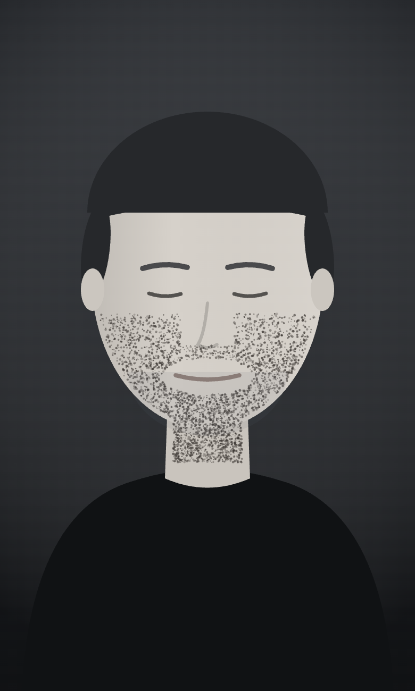
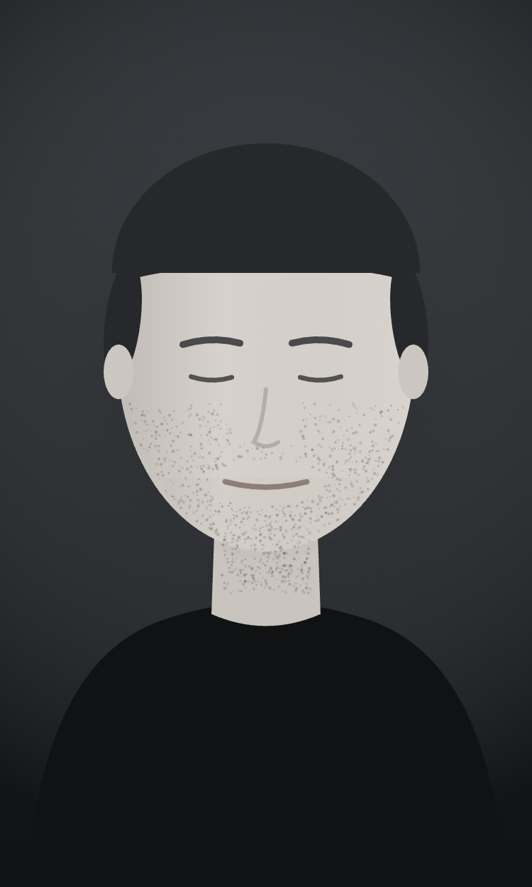

수염을 분석해 변화를 알아보거나, 사진 속 수염 자국만 자연스럽게 정리할 수 있어요.
면도 상태
신경 쓰이는 부위 · 복수 선택
면도 빈도
메이크업으로 수염 자국을 가리나요?
제모 상담을 계획하고 있나요?

수염이 잘 보이는 사진을 준비해 주세요
밝은 곳에서 얼굴을 정면으로 맞추고,
턱 아래까지 보이게 촬영해 주세요.
얼굴형이 달라 보일 수 있는 결과는 만들지 않아요.
밝은 곳에서 얼굴을 정면으로 맞춰 다시 촬영해 주세요.

강도 조절 · 선택한 강도 그대로 저장돼요
이 이미지는 수염과 수염 자국이 줄었을 때의 참고용 시뮬레이션이에요.
수염 분석
턱과 인중을 중심으로 수염 그림자가 모여 있어요. 털의 밀도보다 면도 후 남는 푸른 그림자가 더 눈에 띄는 편이에요.
변화 비교
상담 준비
“{{ item.text }}”
특정 장비나 시술의 효과를 앱이 추천하거나 보장하지 않아요. 상담은 전문가와 진행해 주세요.
관리 팁
{{ item.text }}
지금 보고 있는 ‘{{ intensityLabel }}’ 결과 1장이 저장돼요
이 이미지는 수염과 수염 자국이 줄었을 때의 참고용 시뮬레이션이에요.
의료적 진단이나 결과 예측이 아니에요.
사진과 결과를 삭제할까요?
촬영한 사진과 생성된 결과가 함께 삭제되고, 처음 화면으로 돌아가요.